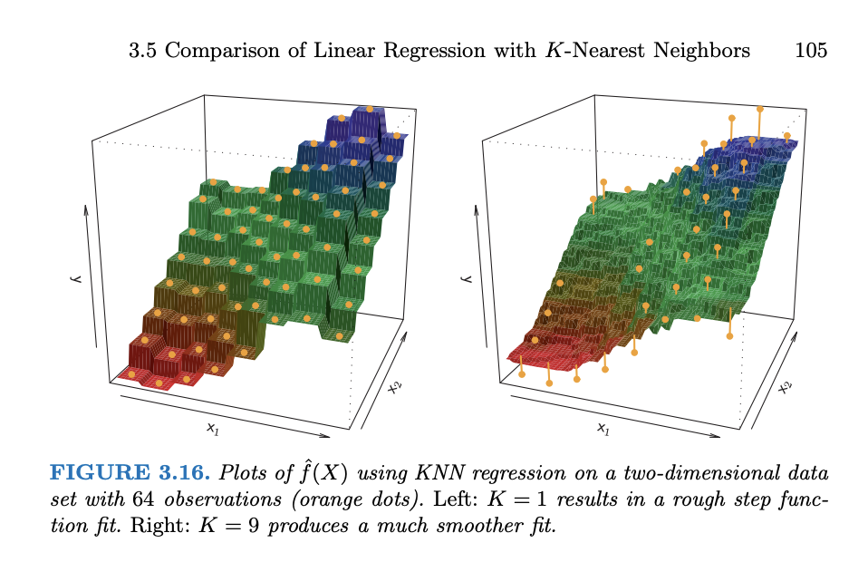
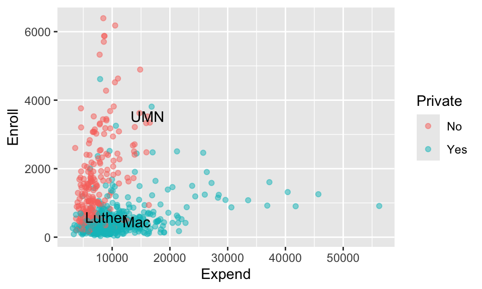
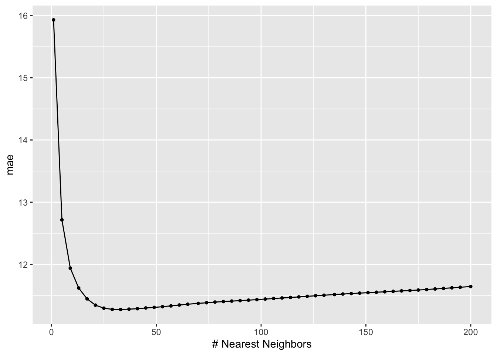
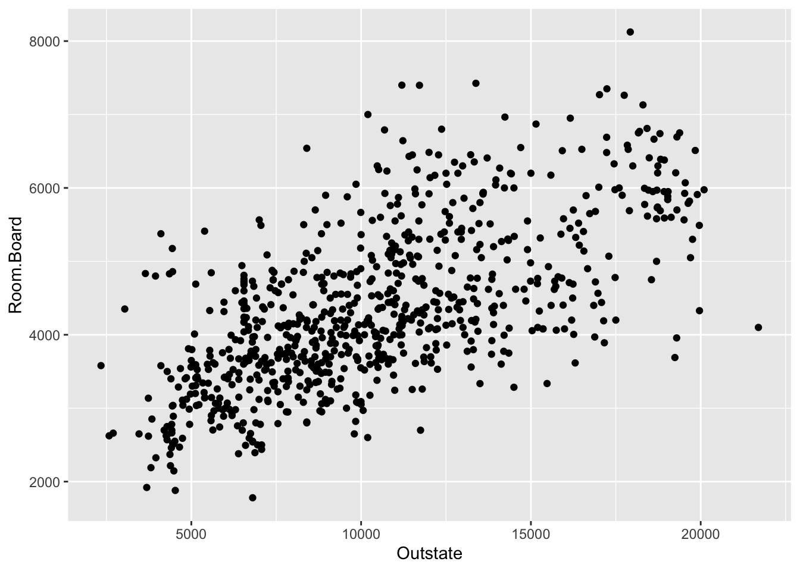

Prepare to take notes (find today’s QMD template on the Schedule page as usual!)
Install the shiny and kknn packages if you haven’t already
Check Slack for announcements about upcoming events
Learning Goals
Clearly describe / implement by hand the KNN algorithm for making a regression prediction
Explain how the number of neighbors relates to the bias-variance tradeoff
Explain the difference between parametric and nonparametric methods
Explain how the curse of dimensionality relates to the performance of KNN
Notes: K Nearest Neighbors (KNN)
Context
world = supervised learning
We want to model some output variable \(y\) using a set of potential predictors (\(x_1, x_2, ..., x_p\)).
task = regression \(y\) is quantitative
(nonparametric) algorithm = K Nearest Neighbors (KNN)
Goal
Our usual parametric models (eg: linear regression) are too rigid to represent the relationship between \(y\) and our predictors \(x\). Thus we need more flexiblenonparametric models.
KNN Regression
Goal
Build a flexible regression model of a quantitative outcome \(y\) by a set of predictors \(x\), \[y = f(x) + \varepsilon\]
Idea
Predict \(y\) using the data on “neighboring” observations. Since the neighbors have similar \(x\) values, they likely have similar \(y\) values.
Algorithm
For tuning parameter K, take the following steps to estimate \(f(x)\) at each set of possible predictor values \(x\):
Identify the K nearest neighbors of \(x\) with respect to Euclidean distance.
Observe the \(y\) values of these neighbors.
Estimate \(f(x)\) by the average \(y\) value among the nearest neighbors.
Output
KNN does not produce a nice formula for \(\hat{f}(x)\), but rather a set of rules for how to calculate \(\hat{f}(x)\).
In pictures (from ISLR)

Small Group Discussion
Discuss the following questions with your group.
EXAMPLE 1: REVIEW
Let’s review the KNN algorithm using a shiny app. Run the code below and ignore the syntax!!
Click “Go!” one time only to collect a set of sample data.
Check out the KNN with K = 1.
What does it mean to pick K = 1?
Where are the jumps made?
Can we write the estimated \(f(x)\) (red line) as \(\beta_0 + \beta_1 x + ....\)?
Now try the KNN with K = 25.
What does it mean to pick K = 25?
Is this more or less wiggly / flexible than when K = 1?
Set K = 100 where 100 is the number of data points. Is this what you expected?
Code
# Load packages and datalibrary(shiny)library(tidyverse)library(tidymodels)library(kknn)library(ISLR)data(College)college_demo <- College %>%mutate(school =rownames(College)) %>%filter(Grad.Rate <=100)# Define a KNN plotting functionplot_knn <-function(k, plot_data){ expend_seq <-sort(c(plot_data$Expend, seq(3000, 57000, length =5000)))#knn_mod <- knn.reg(train = plot_data$Expend, test = data.frame(expend_seq), y = plot_data$Grad.Rate, k = k) knn_results <-nearest_neighbor() %>%set_mode("regression") %>%set_engine(engine ="kknn") %>%set_args(neighbors = k) %>%fit(Grad.Rate ~ Expend, data = plot_data) %>%augment(new_data =data.frame(Expend = expend_seq)) %>%rename(expend_seq = Expend, pred_2 = .pred)ggplot(plot_data, aes(x = Expend, y = Grad.Rate)) +geom_point() +geom_line(data = knn_results, aes(x = expend_seq, y = pred_2), color ="red") +labs(title =paste("K = ", k), y ="Graduation Rate", x ="Per student expenditure ($)") +lims(y =c(0,100))}# BUILD THE SERVER# These are instructions for building the app - what plot to make, what quantities to calculate, etcserver_KNN <-function(input, output) { new_data <-eventReactive(input$do, {sample_n(college_demo, size =100) }) output$knnpic <-renderPlot({plot_knn(k = input$kTune, plot_data =new_data()) })}# BUILD THE USER INTERFACE (UI)# The UI controls the layout, appearance, and widgets (eg: slide bars).ui_KNN <-fluidPage(sidebarLayout(sidebarPanel(h4("Sample 100 schools:"), actionButton("do", "Go!"),h4("Tune the KNN algorithm:"), sliderInput("kTune", "K", min =1, max =100, value =1) ),mainPanel(h4("KNN Plot:"), plotOutput("knnpic") ) ))# RUN THE SHINY APP!shinyApp(ui = ui_KNN, server = server_KNN)
Solution
done
KNN with K = 1:
predict grad rate using the data on the 1 closest neighbor
where the neighorhood changes (in between observed points)
no
KNN with K = 25:
predict grad rate by average grad rate among 25 closest neighbors
less wiggly / less flexible
probably not. it’s not a straight line. You might have expected a horizontal line at one value. There is a bit more going on to the algorithm (a weighted average).
KNN DETAILS: WEIGHTED AVERAGE
The tidymodels KNN algorithm predicts \(y\) using weighted averages.
The idea is to give more weight or influence to closer neighbors, and less weight to “far away” neighbors.
Optional math: Let (\(y_1, y_2, ..., y_K\)) be the \(y\) outcomes of the K neighbors and (\(w_1, w_2, ..., w_K\)) denote the corresponding weights. These weights are defined by a “kernel function” which ensures that: (1) the \(w_i\) add up to 1; and (2) the closer the neighbor \(i\), the greater its \(w_i\). Then the neighborhood prediction of \(y\) is:
\[\sum_{i=1}^K w_i y_i\]
EXAMPLE 2: BIAS-VARIANCE TRADEOFF
What would happen if we had gotten a different sample of data?!?
Bias: On average, across different datasets, how close are the estimates of \(f(x)\) to the observed \(y\) outcomes?
We have high bias if our estimates are far from the observed \(y\) outcomes
We have low bias if our estimates are close to the observed \(y\) outcomes
Variance: How variable are the estimates of \(f(x)\) from dataset to dataset? Are the estimates stable or do they vary a lot?
We have high variance if our estimates change a lot from dataset to dataset
We have low variance if our estimates don’t change much from dataset to dataset
To explore the properties of overly flexible models, set K = 1 and click “Go!” several times to change the sample data. How would you describe how KNN behaves from dataset to dataset:
low bias, low variance
low bias, high variance
moderate bias, low variance
high bias, low variance
high bias, high variance
To explore the properties of overly rigid models, repeat part a for K = 100:
low bias, low variance
low bias, high variance
moderate bias, low variance
high bias, low variance
high bias, high variance
To explore the properties of more “balanced” models, repeat part a for K = 25:
low bias, low variance
low bias, high variance
moderate bias, low variance
high bias, low variance
high bias, high variance
Solution
low bias, high variance
high bias, low variance
moderate bias, low variance
EXAMPLE 3: BIAS-VARIANCE REFLECTION
In general…
Why is “high bias” bad?
Why is “high variability” bad?
What is meant by the bias-variance tradeoff?
Solution
On average, our prediction errors are large or high
The model is not stable / trustworthy, changes depending on the sample data
Ideally, both bias and variance would be low. BUT when we improve one of the features, we hurt the other.
EXAMPLE 4: BIAS-VARIANCE TRADEOFF FOR PAST ALGORITHMS
The LASSO algorithm depends upon tuning parameter \(\lambda\):
When \(\lambda\) is too small, the model might keep too many predictors, hence be overfit.
When \(\lambda\) is too big, the model might kick out too many predictors, hence be too simple.
With this in mind:
For which values of \(\lambda\) (small or large) will LASSO be the most biased?
For which values of \(\lambda\) (small or large) will LASSO be the most variable?
The bias-variance tradeoff also comes into play when comparing across algorithms, not just within algorithms. Consider LASSO vs least squares:
Which will tend to be more biased?
Which will tend to be more variable?
When will LASSO beat least squares in the bias-variance tradeoff game?
Solution
.
large. too simple / rigid
small. too overfit / flexible
.
LASSO. it’s simpler
least squares. it’s more flexible
when the least squares is overfit
Exercises
Instructions
Context
Using the College dataset from the ISLR package, we’ll explore the KNN model of college graduation rates (Grad.Rate) by:
Understand how “neighborhoods” are defined using multiple predictors (both quantitative and categorical) and how data pre-processing steps are critical to this definition.
Tune and build a KNN model in R.
Apply the KNN model.
It is easier to review code than to deepen your understanding of new concepts outside class. Prioritize and focus on the concepts over the R code. You will later come back and reflect on the code.
Directions
Stay engaged. Studies show that when you’re playing cards, watching vids, continuously on your message app, it impacts both your learning and the learning of those around you.
Be kind to yourself. You will make mistakes!
Be kind to each other. Collaboration improves higher-level thinking, confidence, communication, community, & more.
actively contribute to discussion
actively include all other group members in discussion
create a space where others feel comfortable making mistakes & sharing their ideas
stay in sync
As you go, consider: W.A.I.T. (Why Am/Aren’t I Talking?)
Questions
Part 1: Identifying neighborhoods
The KNN model for Grad.Rate will hinge upon the neighborhoods defined by the 3 Expend, Enroll, and Private predictors. And these neighborhoods hinge upon how we pre-process our predictors.
We’ll explore these ideas below using the results of the following chunk. Run this, but DON’T spend time examining the code!
Check out the feature space of our 3 predictors and take note of which school is the closer neighbor of Mac: UMN or Luther.
ggplot(college_sub, aes(x = Expend, y = Enroll, color = Private)) +geom_point(alpha =0.5) +geom_text(data =head(college_sub, 3), aes(x = Expend, y = Enroll, label =c("Mac", "Luther", "UMN")), color ="black")

Solution
Luther
What happens when we don’t standardize the predictors?
Of course, KNN relies upon mathematical metrics (Euclidean distance), not visuals, to define neighborhoods. And these neighborhoods depend upon how we pre-process our predictors. Consider the pre-processing recipe_1 which uses step_dummy() but not step_normalize():
Use this pre-processed data to calculate the Euclidean distance between Mac and Luther:
sqrt((14213- ___)^2+ (452- ___)^2+ (1- ___)^2)
Check your distance calculation, and calculate the distances between the other school pairs, using dist().
dist(recipe_1_data)
By this metric, is Mac closer to Luther or UMN? So is this a reasonable metric? If not, why did this happen?
Solution
# asqrt((14213-8949)^2+ (452-587)^2+ (1-1)^2)
[1] 5265.731
# bdist(recipe_1_data)
Mac Luther
Luther 5265.731
UMN 3616.831 7750.993
UMN. The quantitative predictors are on different scales
What happens when we standardize then create dummy predictors?
The metric above was misleading because it treated enrollments (people) and expenditures ($) as if they were on the same scale. In contrast, recipe_2 first uses step_normalize() and then step_dummy() to pre-process the predictors:
What happens when we create dummy predictors then standardize?
Whereas recipe_2 first uses step_normalize() and then step_dummy() to pre-process the predictors, recipe_3 first uses step_dummy() and then step_normalize():
How do the pre-processed data from recipe_3 compare those to recipe_2?
RECALL: The standardized dummy variables lose some contextual meaning. But, in general, negative values correspond to 0s (not that category), positive values correspond to 1s (in that category), and the further a value is from zero, the less common that category is.
Calculate the distance between each pair of schools using these pre-processed data. By this metric, is Mac closer to Luther or UMN?
dist(recipe_3_data)
How do the distances resulting from recipe_3 compare to those from recipe_2?
dist(recipe_2_data)
Unlike recipe_2, recipe_3 considered the fact that private schools are relatively more common in this dataset, making the public UMN a bit more unique. Why might this be advantageous when defining neighborhoods? Thus why will we typically first use step_dummy() before step_normalize()?
Private_Yes is no 0.6132441 or -1.6285680, not 1 or 0.
Luther
dist(recipe_3_data)
Mac Luther
Luther 1.044461
UMN 4.009302 4.120999
The distance between Mac and Luther is the same, but the distance between Mac and UMN is bigger.
dist(recipe_2_data)
Mac Luther
Luther 1.044461
UMN 3.471135 3.599571
Since public schools are more “rare”, the difference between Mac (private) and UMN (public) is conceptually bigger than if private and public schools were equally common.
Part 2: Build the KNN
With a grip on neighborhoods, let’s now build a KNN model for Grad.Rate.
For the purposes of this activity (focusing on concepts over R code), simply run each chunk and note what object it’s storing.
You will later be asked to come back and comment on the code.
Compare the KNN models
Plot the CV MAE for each of the KNN models with different tuning parameters K. NOTE: This is the same function we used for the LASSO!
knn_models %>%autoplot()
Use this plot to describe the goldilocks problem in tuning the KNN:
When K is too small, CV MAE increases because the model is too …
When K is too big, CV MAE increases because the model is too …
Why did we try a range of K values?
In KNN modeling, we typically want to minimize the prediction errors. Given this goal, is the range of K values we tried wide enough? Or might there be a better value for K outside this range?
In KNN modeling, why won’t we typically worry about “parsimony”?
Solution
knn_models %>%autoplot()

When K is too small, CV MAE increases because the model is too flexible (overfit). When K is too big, CV MAE increases because the model is too rigid (simple).
Because we can’t know in advance what a good value of K is.
Yes, it’s wide enough. We observe that CV MAE is minimized when K is around 25, it then increases from there.
Pick K
Identify which value of K minimizes the CV MAE. Make sure this matches up with what you observe in the plot.
best_k <- knn_models %>%select_best()best_k
Calculate and interpret the CV MAE for this model.
# Plug in a number or best_k$neighborsknn_models %>%collect_metrics() %>%filter(neighbors == ___)
We expect the predictions of grad rate for new schools (not in our sample) to be off by 11.3 percentage points.
# Plug in a number or best_k$neighborsknn_models %>%collect_metrics() %>%filter(neighbors ==33)
# A tibble: 1 × 7
neighbors .metric .estimator mean n std_err .config
<int> <chr> <chr> <dbl> <int> <dbl> <chr>
1 33 mae standard 11.3 10 0.516 Preprocessor1_Model09
Final KNN model
Build your “final” KNN model using the optimal value you found for K above. NOTE: We only looked at roughly every 4th possible value of K (K = 1, 5, 9, etc). If we wanted to be very thorough, we could re-run our algorithm using each value of K close to our optimal K.
If you have any ideas, it’s probably based on context because the KNN hasn’t given us any info about why it returns higher or lower predictions of grad rate.
KNN pros and cons
What assumptions did the KNN model make about the relationship of Grad.Rate with Expend, Enroll, and Private?
What did the KNN model tell us about the relationship of Grad.Rate with Expend, Enroll, and Private?
Reflecting upon a and b, name one pro of using a nonparametric algorithm like the KNN instead of a parametric algorithm like least squares or LASSO.
Similarly, name one con.
Consider another “con”. Just as with parametric models, we could add more and more predictors to our KNN model. However, the KNN algorithm is known to suffer from the curse of dimensionality. Why? (A quick Google search might help.)
Solution
none
not much – we can just use it for predictions
KNN doesn’t make assumptions about relationships (which is very flexible!)
KNN doesn’t provide much insight into the relationships between y and x
When calculated by more and more predictors, our nearest neighbors might actually be far away (thus not very similar).
Parametric or nonparametric
Suppose we wanted to model the relationship of room and board costs vs out-of-state tuition. Would you use the parametric least squares algorithm or the nonparametric KNN algorithm?
ggplot(College, aes(x = Outstate, y = Room.Board)) +geom_point()

In general, in what situations would you use least squares instead of KNN? Why?
Solution
least squares. the relationship is linear, so doesn’t require the flexibility of a nonparametric algorithm
when the relationships of interest can be reasonably represented by least squares, we should use least squares. It provides much more insight into the relationships.
R code reflection
Revisit all code in Parts 2 and 3 of the exercises. Comment upon each chunk:
What is it doing?
How, if at all, does it differ from the least squares and LASSO code?
Data drill
Calculate the mean Enroll for public vs private schools.
Plot the relationship of Grad.Rate vs Enroll, Private, and Expend.
Identify the private schools with first year enrollments exceeding 3000.
Ask and answer another question of interest to you.
Grad.Rate Expend Enroll Private
Boston University 72 16836 3810 Yes
Brigham Young University at Provo 33 7916 4615 Yes
University of Delaware 75 10650 3252 Yes
Wrap-Up
Today’s Material
Wrap up the activity, check the solutions, and watch the optional R code tutorial posted for today.
Remember that there’s an R code reference section at the bottom of these notes!
Upcoming Deadlines
CP7: due before our next class
Homework:
HW1 revisions due next Tuesday
Start HW3
Group Assignment 1:
Read the directions
Start exploring the data and potential models
Make visualizaitons, fit models, evaluate models
This is great practice / review of code & concepts
Quiz 1 coming up in 1.5 weeks!
Notes: R code
Suppose we want to build a model of response variable y using predictors x1 and x2 in our sample_data.
# STEP 4: Estimate multiple KNN models using a range of possible K values# Calculate the CV MAE & R^2 for eachset.seed(___)knn_models <- knn_workflow %>%tune_grid(grid =grid_regular(neighbors(range =c(___, ___)), levels = ___),resamples =vfold_cv(sample_data, v = ___),metrics =metric_set(mae, rsq) )
STEP 4 notes:
Since the CV process is random, we need to set.seed(___).
We use tune_grid() instead of fit() since we have to build multiple KNN models, each using a different tuning parameter K.
grid specifies the values of tuning parameter K that we want to try.
the range specifies the lowest and highest numbers we want to try for K (e.g. range = c(1, 10). The lowest this can be is 1 and the highest this can be is the size of the smallest CV training set.
levels is the number of K values to try in that range, thus how many KNN models to build.
resamples and metrics indicate that we want to calculate a CV MAE for each KNN model.
Tuning K
# Calculate CV MAE for each KNN modelknn_models %>%collect_metrics()# Plot CV MAE (y-axis) for the KNN model from each K (x-axis)autoplot(knn_models)# Identify K which produced the lowest ("best") CV MAEbest_K <-select_best(knn_models, metric ="mae")best_K# Get the CV MAE for KNN when using best_Kknn_models %>%collect_metrics() %>%filter(neighbors == best_K$neighbors)
Finalizing the “best” KNN model
# parameters = final K value (best_K or whatever other value you might want)final_knn_model <- knn_workflow %>%finalize_workflow(parameters = ___) %>%fit(data = sample_data)
Use the KNN to make predictions
# Put in a data.frame object with x1 and x2 values (at minimum)final_knn_model %>%predict(new_data = ___)